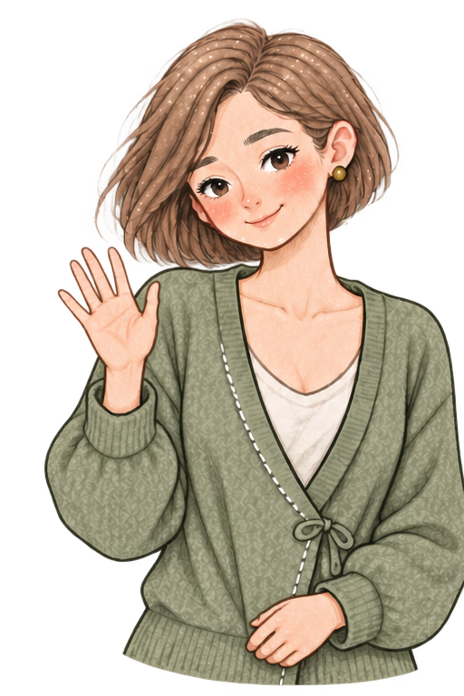
01 / WELCOME
A quiet hello.
Before permission or focus. Never an automatic start.
Rue / statebook 01 24 September 2026
The above-knee Rue you chose is now the visual north star. Eight newly generated portraits for compact UI moments, four new full-body states where her silhouette can breathe. D-43 update: static Rue now replaces Kiwi in local iOS/Android builds; this gallery preserves the unretouched art reference.
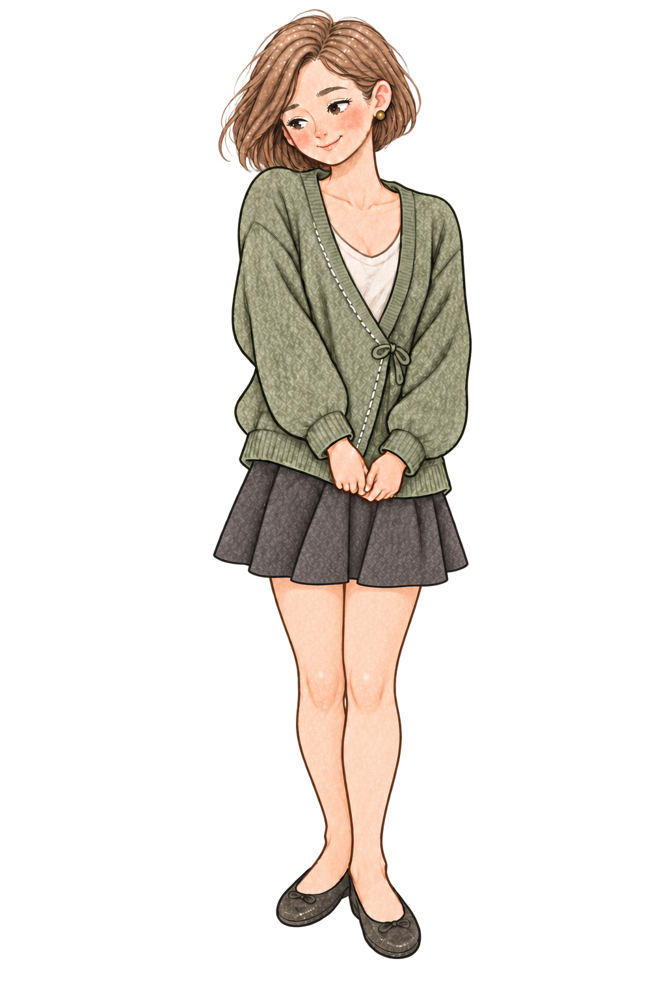
01 / compact moments
Eight new references generated from the chosen v6 image, not recycled from the earlier v4 portrait sheets. At Home’s current 84×96pt, the face matters more than a full-length silhouette.

Before permission or focus. Never an automatic start.
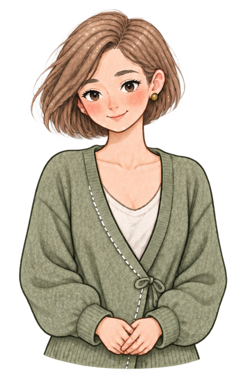
Attentive; the rule may be saved, not necessarily running.
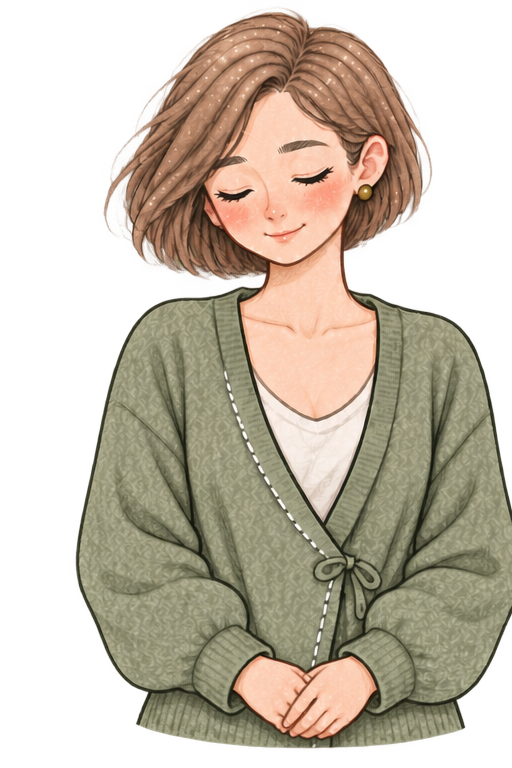
Only when the current session is confirmed active.
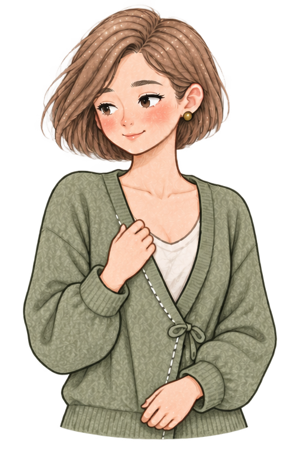
For checking or reflection. Not an auto-break promise.
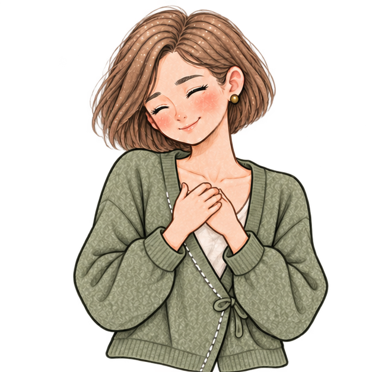
Only after a focus session actually ends.
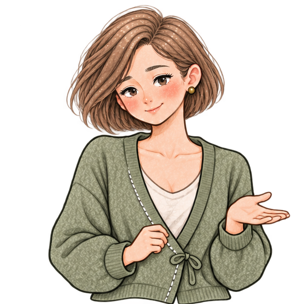
Show after verified free recovery, not before tapping.
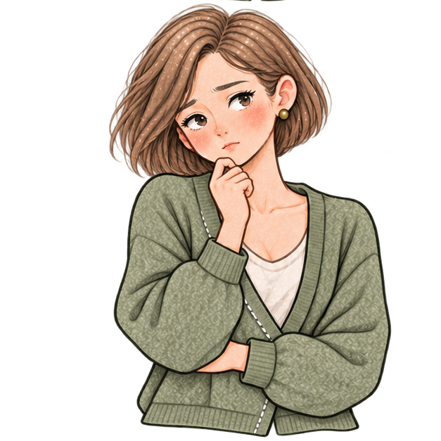
Pair with the actual cause and an actionable step.
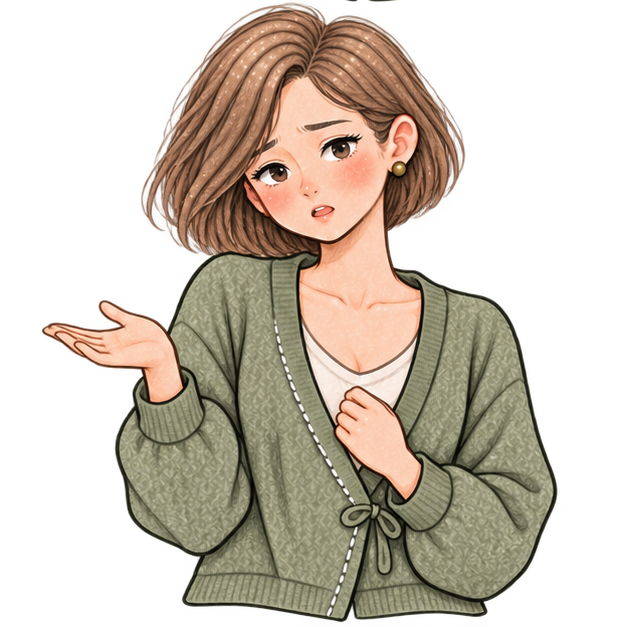
Keep the error and free recovery path visible.
A 84×96 CSS-pixel preview, not an iPhone screenshot or a finished accessibility test.
These are composition and expression references. The first sheet has a smoky background and the second has colored edge fringes. Switching to Ink makes those faults visible; an alpha channel is not the same as a clean cutout.
02 / the silhouette survives
Full-body drawings preserve v6’s above-knee hem, flats and adult proportions. They are for larger compositions, not a tiny Home status icon.
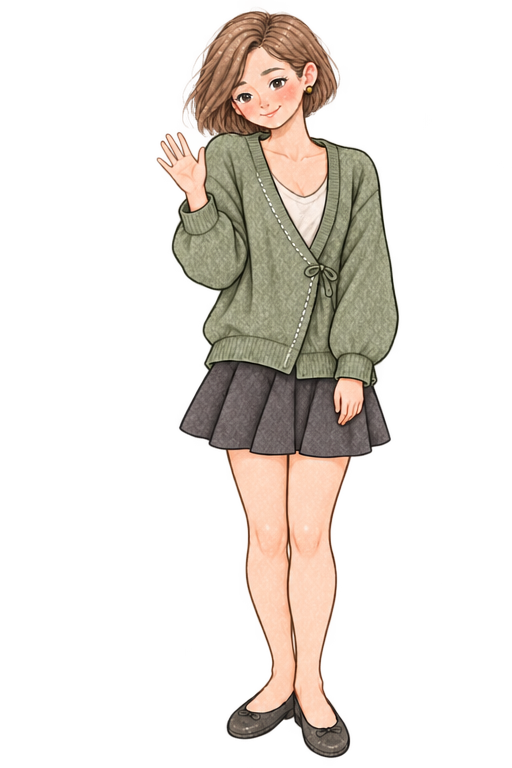
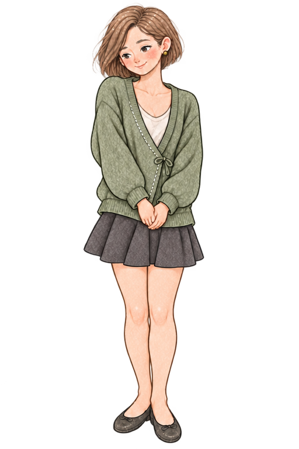
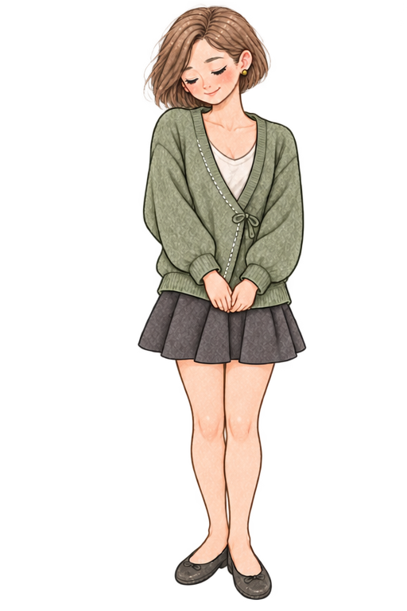
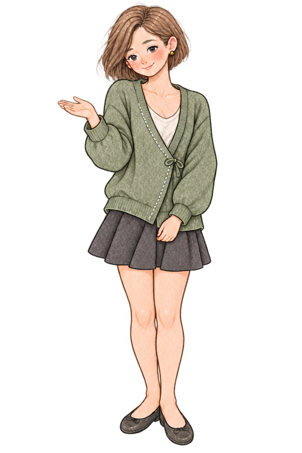
Transparent pixels and colored halos remain. The full-body sheet is not a finished transparent sprite or native animation.
03 / from drawings to interfaces
At the time of this study iOS had 13 states mapped to Kiwi and Android used Kiwi on onboarding/Home. D-43 now wires static Rue into those existing paths; the map below is the earlier rollout plan, not proof of physical-device QA.
Rights/similarity review, real alpha on cream and ink, small-size facial legibility and accessibility. Local builds use attenuated downsamples; release-grade transparency remains unverified.
Preserve `RoomSpiritState` logic; give Rue independent images. Kiwi video/poster were removed from the app. Before a restore, show attentive—not success.
The two real Kiwi entry points now show Rue. Connect extra Android states only to actual controller evidence, not merely twelve available files.
Test en/ko, Reduce Motion, TalkBack/VoiceOver, free Restore access and manual Start focus on actual devices. Keep archived Kiwi originals for a rollback rebuild, not in the installed app.
VISUAL DIRECTION / CHOSEN · LOCAL APP / CHANGED
iOS/Android locally display static Rue; the off wordmark icon, real screenshot board and Google Play remain unchanged. Her edges, rights, accessibility and real-device behavior need further review. Source files and exact state maps remain here. Compare the new outfit concepts ↗
Back to the top ↑